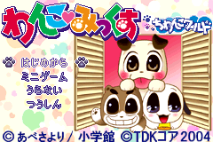

Wanko Mix Chiwanko World (Japan)
Stateless / Passcode Debug Menu Patch 💾 MultiBoot 🎮 4P Link
Cartridge Identity
- Game Code
BWXJ(FamilyBWX)- Header Title
WANKOMIKKUSU- Maker / Revision
1Q/ rev0- ROM Size
- 8.0 MiB (8,388,608 B)
- Save Media
None / Unknown- SHA-256
952fa87ed26a954ab6e3e3fe101e22e954055ac4538765ab690f4ef00e01815a
Screenshots


Debug Menu Re-Enablement Patch (.ips)
Download BWXJ-debug.ips (29 B IPS / 16 B delta)
- Hook Mechanism
scene_descriptor_table_override· Patch scene table at 0x082B5098 (slot 10 [LOGO]) with slot 0 debug menu descriptor [DEBUG MENU] (16 bytes)- IPS SHA-256
f4f6ab02bbf8e3ec104e1684526e997967a9b3b32fbdd5d2615296917646d02e
gbakit patch apply BWXJ-debug.ips original.gba patched-debug.gba

Link Cable & Multiplayer Communications
This title contains detected communication capabilities: 💾 MultiBoot 🎮 4P Link.
Detailed protocol specifications, SIO registers, Joybus commands, and MultiBoot sequences are documented in the Link & Multiplayer Reference.
- Multi-Player SIO (4P)
- 16-bit ring network · SIOCNT (
0x04000128) literals:0x00e35c,0x00e38c,0x00e610· SIODATA32/SIOMULTI0 (0x04000120) literals:0x00e608 - Single-Cart MultiBoot
- Single-Cartridge MultiBoot (Download Play) client/server handler · Thumb SWI 0x25 (
0xDF25):0x167c9e,0x1afee8,0x20429a,0x32584a
Cartridge Storage Architecture: Stateless / Passcode
Zero non-volatile battery hardware: This cartridge PCB contains ROM only (no SRAM, Flash, or EEPROM chips). Progression is preserved via on-screen passcodes or session-only gameplay. No
.sav file is generated or required.
Asset Map (formatkit.asset-map.v1)
Download BWXJ-r0-952fa87ed26a954a.asset-map.json.gz (96,469 B (94.2 KiB)) Verified PASS · 27.86% coverage
| Metric | Bytes / Value | Entries |
|---|---|---|
| Identified | 2,302,108 B (2.20 MiB) (27.44%) | 902 |
| Mapped | 0 B (0.00%) | 0 |
| Opaque | 35,095 B (34.3 KiB) (0.42%) | 1 |
| Unknown | 6,051,405 B (5.77 MiB) (72.14%) | 705 |
| Total ROM Size | 8,388,608 B (8.00 MiB) | 1,608 |
| Coverage % | 27.86% | — |
| Entries w/ Code Refs | 948 / 1,608 (58.96%) | — |
Top Identified Formats: compress.bios-lz77 (267 · 1,697,332 B (1.62 MiB)) · compress.bios-huffman (50 · 465,552 B (454.6 KiB)) · gfx.gba-palette (583 · 137,696 B (134.5 KiB)) · audio.m4a-song-table (1 · 1,336 B (1.3 KiB)) · gba.rom-header (1 · 192 B)
Largest unknown Extents (Headerless / Custom Asset Candidates)
| Offset | Size | Shannon Entropy | Code Refs |
|---|---|---|---|
0x00200750 | 457,392 B (446.7 KiB) | 5.725 bits/B | 1 |
0x006E7740 | 428,224 B (418.2 KiB) | 0.001 bits/B | 1 |
0x00193330 | 316,588 B (309.2 KiB) | 6.968 bits/B | 0 |
0x002B9204 | 291,432 B (284.6 KiB) | 0.054 bits/B | 0 |
0x004BFED8 | 196,904 B (192.3 KiB) | 0.068 bits/B | 0 |
gzip -dk BWXJ-r0-952fa87ed26a954a.asset-map.json.gz && gbakit map verify rom.gba BWXJ-r0-952fa87ed26a954a.asset-map.json
gbakit assets export rom.gba --asset-map BWXJ-r0-952fa87ed26a954a.asset-map.json -o out/Text, Fonts & Scene Data
- Primary Text Encoding
- Shift-JIS (uncompressed) (
9ASCII strings ·200Shift-JIS runs) - Font & VWF Indicators
- VWF Width Table 1bpp Font · BIOS SWIs: BitUnPack
0x10:8· LZ770x11/12:22· Huffman0x13:8· RLE0x14/15:12 - Scene & Packaging
19ROM pointer tables (≥32 entries,2≥200) ·6relativeu32TOCs ·172OAM metasprite hits
Hardware MMIO Subsystems
ppu_display0x8014414